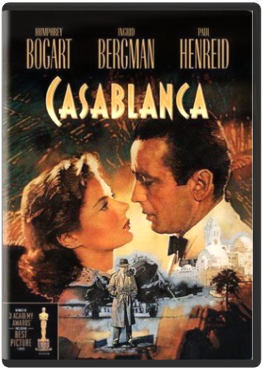

2001: A Space Odyssey Stanley KubrickA Kubrick masterpiece that spans from the dawn of man to it's title year when an alien artifact is found on the moon. An expedition is launched to Jupiter to track it's origins. Airplane! Jim Abrahams, David Zucker, Jerry ZuckerA pilot afraid to fly follows his stewardess ex-girlfriend and must take over for the poisoned crew. Alien Ridley Scott Austin Powers: International Man of Mystery Jay Roach Beetlejuice Tim Burton Braveheart Mel GibsonA warrior marries secretly and leads a revolt against the tyrannical english king in 13th-century scotland. Oscars for best picture. Studio: Paramount Home Video Release Date: 05/18/2004 Starring: Mel Gibson James Robinson Run time: 177 minutes Rating: R Director: Mel Gibson Casablanca Michael CurtizCasablanca: easy to enter, but much harder to leave, especially if you're wanted by the Nazis. Such a man is Resistance leader Victor Laszlo (Paul Henreid), whose only hope is Rick Blaine (Humphrey Bogart), a cynical American who sticks his neck out for no one, especially Victor's wife Ilsa (Ingrid Bergman), the ex-lover who broke his heart. Ilsa offers herself in exchange for Laszlo's transport out of the country and bitter Rick must decide what counts more - personal happiness or countless lives hanging in the balance. E.T. The Extra-Terrestrial Anniversary Edition  Carol Littleton, Steven SpielbergRelive the adventure and magic in one of the most beloved motion pictures of all-time, E.T. The Extra-Terrestrial, from Academy Award-winning director Steven Spielberg. Captivating audiences of all ages, this timeless story follows the unforgettable journey of a lost alien and the 10-year-old boy he befriends. Join Elliot (Henry Thomas), Gertie (Drew Barrymore) and Michael (Robert MacNaughton) as they come together to help E.T. find his way back home. Now digitally remastered with enhanced picture and sound for its 30th Anniversary, E.T. The Extra-Terrestrial is one of the great American films (Leonard Maltin) that forever belongs in the hearts and minds of audiences everywhere. Fear and Loathing in Las Vegas Terry GilliamJohnny Depp, Benicio del Toro, Cameron Diaz, Christina Ricci. Directed by Terry Gilliam. The screen melts and morphs into one psychedelic image after another as a journalist and his lawyer embark on a drug-addled trip to Vegas. Based on the book by the original gonzo journalist," Hunter S. Thompson. 1998/color/118 min/R. Ghostbusters Ivan ReitmanParapsychologists with nuclear guns go into business ridding New York of poltergeists. Directed by Ivan Reitman. Goldfinger Richard Maibaum, Paul Dehn, Ian Fleming, Guy Hamilton Indiana Jones and the Last Crusade Steven SpielbergThe third installment in the widely beloved Spielberg/Lucas Indiana Jones saga begins with an introduction to a younger Indy (played by the late River Phoenix), who, through a fast-paced prologue, gives the audience insight into the roots of his taste for adventure, fear of snakes, and dogged determination to take historical artifacts out of the hands of bad guys and into the museums in which they belong. A grown-up Indy (Harrison Ford) reveals himself shortly afterward in a familiar classroom scene, teaching archeology to a disproportionate number of starry-eyed female college students in 1938. Once again, however, Mr. Jones is drawn away from his day job after an art collector (Julian Glover) approaches him with a proposition to find the much sought after Holy Grail. Circumstances reveal that there was another avid archeologist in search of the famed cup — Indiana Jones' father, Dr. Henry Jones (Sean Connery) — who had recently disappeared during his efforts. The junior and senior members of the Jones family find themselves in a series of tough situations in locales ranging from Venice to the most treacherous spots in the Middle East. Complicating the situation further is the presence of Elsa (Alison Doody), a beautiful and intelligent woman with one fatal flaw: she's an undercover Nazi agent. The search for the grail is a dangerous quest, and its discovery may prove fatal to those who seek it for personal gain. Indiana Jones and the Last Crusade earned a then record-breaking $50 million in its first week of release. Legend - Director's Cut Ridley ScottSet in a timeless mythical forest inhabited by fairies, goblins, unicorns and mortals, this fantastic story stars Tom Cruise as a mystical forest dweller, chosen by fate, to undertake a heroic quest. He must save the beautiful Princess Lily (Mia Sara) and defeat the demonic Lord of Darkness (Tim Curry) or the world will be plunged into a never-ending ice age The Lord of the Rings: The Motion Picture Trilogy Peter JacksonDeluxe 15-Disc Set Includes 9 Special Features DVDs with over 26 Hours of Spellbinding Behind-the-Moviemaking Material Including the Rare Costa Botes Documentaries. The Lord Of The Rings: The Fellowship Of The Ring Extended Edition: With the help of a courageous fellowship of friends and allies, Frodo embarks on a perilous mission to destroy the legendary One Ring. The Lord Of The Rings: The Two Towers Extended Edition: In the middle chapter of this historic movie trilogy, the Fellowship is broken but its quest to destroy the One Ring continues. The Lord Of The Rings: The Return Of The King Extended Edition: The final battle for Middle-earth begins. Frodo and Sam, led by Gollum, continue their dangerous mission toward the fires of Mount Doom in order to destroy the One Ring. Marvel's The Avengers Joss WhedonMarvel makes cinematic history as it unites the super hero team-up of a lifetime. Iron Man (Robert Downey Jr.), the Hulk (Mark Ruffalo), Thor (Chris Hemsworth), and Captain America (Chris Evans) assemble together for the very first time ever in this epic, action-packed blockbuster alongside Black Widow (Scarlett Johansson), Hawkeye (Jeremy Renner), and Nick Fury (Samuel L. Jackson). Director Joss Whedon creates an unprecedented universe that has become a global phenomenon. Packed with spectacular visual effects, and exclusive bonus features, including Marvel's first-ever gag reel, never-before-seen Marvel short, and an interactive second screen experience, Marvel's The Avengers will blow your mind! The Naked Gun: From the Files of Police Squad! David Zucker A Nightmare on Elm Street Wes Craven"1, 2, Freddy’s coming for you." And here he is, phantom fiend Freddy Krueger in all his razor-fingered infamy. Wes Craven (Scream movies) directs this trendsetting first in the slash-hit series. The premise is simple: Freddy (Robert Englund) homicidally haunts the sleep of Elm Street teens. The results are terrifying and mind-blowingly innovative. There’s another film debut too: Johnny Depp. He plays the ready steady of the hottie mcsmarty (Heather Langenkamp) who figures a clever way to flambé the fiend. But ever-say-die Freddy will be 3, 4 back for more…even returning to the screen in a killer 2010 remake of this diabolical original. Sweet dreams! The Sissi Collection At the age of seventeen, Romy Schneider became an international star through her portrayal of Princess Elisabeth (Sissi) of Austria in the first of three lavish films directed by Ernst Marischka. While she would go on to work with some of the most influential and daring European directors of the era, Schneider will always be remembered by this defining role. Now for the first time on DVD, KOCH LORBER Films proudly presents the restored "Sissi Trilogy" (Sissi, Sissi: The Young Empress, Sissi: The Fateful Years of an Empress) in its entirety along with the U.S. theatrically released, English-language dubbed version, Forever My Love, and Victoria in Dover (The Story of Vickie), a precursor to the trilogy in which Schneider plays Britain’s Princess Victoria. Star Wars Trilogy Episodes IV-VI Star Wars: The Original Trilogy on Blu-ray+DVD Combo feature Star Wars Episodes IV-VI. The STAR WARS saga concludes with Star Wars: Episode IV - A New Hope, Star Wars: Episode V - The Empire Strikes Back, and Star Wars: Episode VI - Return of the Jedi as Luke Skywalker and Princess Leia, aided by an unforgettable assortment of courageous characters, lead the Rebellion to bring balance back to the Force! Star Wars Episode IV: A New Hope Nineteen years after the formation of the Empire, Luke Skywalker is thrust into the struggle of the Rebel Alliance when he meets Obi-Wan Kenobi, who has lived for years in seclusion on the desert planet of Tatooine. Obi-Wan begins Luke's Jedi training as Luke joins him on a daring mission to rescue the beautiful Rebel leader Princess Leia from the clutches of the evil Empire. Star Wars Episode V: The Empire Strikes Back In this installment, Luke Skywalker and his friends have set up a new base on the ice planet of Hoth, but it is not long before their secret location is discovered by the evil Empire. After narrowly escaping, Luke splits off from his friends to seek out a Jedi Master called Yoda. Meanwhile, Han Solo, Chewbacca, Princess Leia, and C-3PO seek sanctuary at a city in the Clouds run by Lando Calrissian, an old friend of Han’s. But little do they realize that Darth Vader already awaits them. Star Wars Episode VI: Return of the Jedi (4 years after Episode IV) In the epic conclusion of the saga, the Empire prepares to crush the Rebellion with a more powerful Death Star while the Rebel fleet mounts a massive attack on the space station. Luke Skywalker confronts Darth Vader in a final climactic duel before the evil Emperor. Wayne's World  Penelope SpheerisBased on the Saturday Night Live sketch of the same name Wayne's World is a wacky irreverent pop-culture comedy about the adventures of two amiably aimless metal-head friends Wayne (Mike Myers) and Garth (Dana Carvey). From Wayne's basement the pair broadcast a talk-show called Wayne's World on local public access television. The show comes to the attention of a sleazy network executive (Rob Lowe) who wants to produce a big-budget version of Wayne's World-and he also wants Wayne's girlfriend a rock singer named Cassandra (Tia Carrere). Wayne and Garth have to battle the executive not only to save their show but also Cassandra. Director Penelope Spheeris Myers and Carvey hang a lot of silly but funny jokes on this thin plot and the energy of the cast-as well as the wild pop-culture references-make Wayne's World a cut above the average Saturday Night Live spin-off movie. |